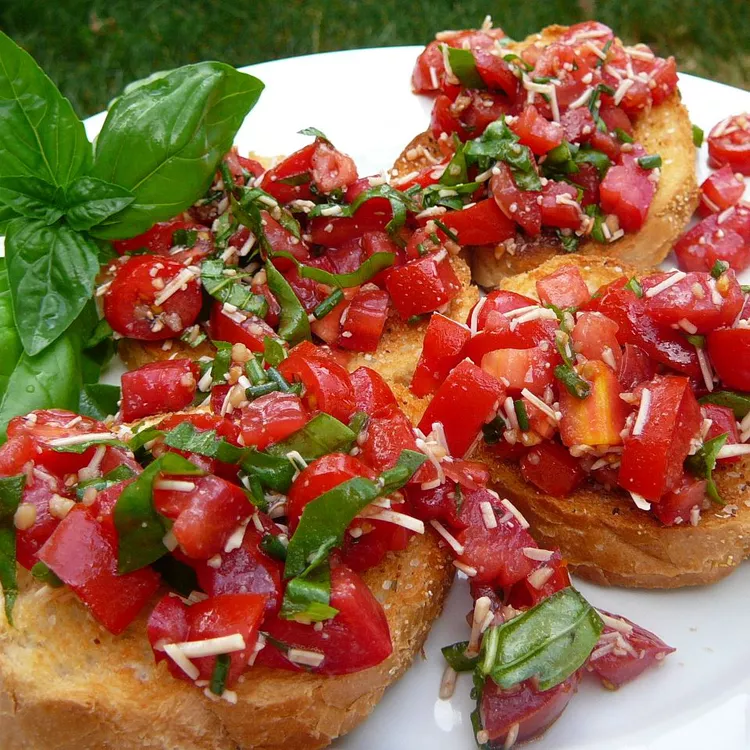

Bruschetta

Description
This bruschetta recipe is my favorite dish to make when
I have gatherings. They are the perfect finger food that
is nice and crunchy and really refreshing!
Ingredients
- 1 loaf French bread, cut into 1/4-inch slices
- 1 tablespoon extra-virgin olive oil
- 8 roma (plum) tomatoes, diced
- 1/3 cup chopped fresh basil
- 1 ounce Parmesan cheese, freshly grated
- 2 cloves garlic, minced
- 1 tablespoon good quality balsamic vinegar
- 2 teaspoons extra-virgin olive oil
- 1/4 teaspoon kosher salt
- 1/4 teaspoon freshly ground black pepper